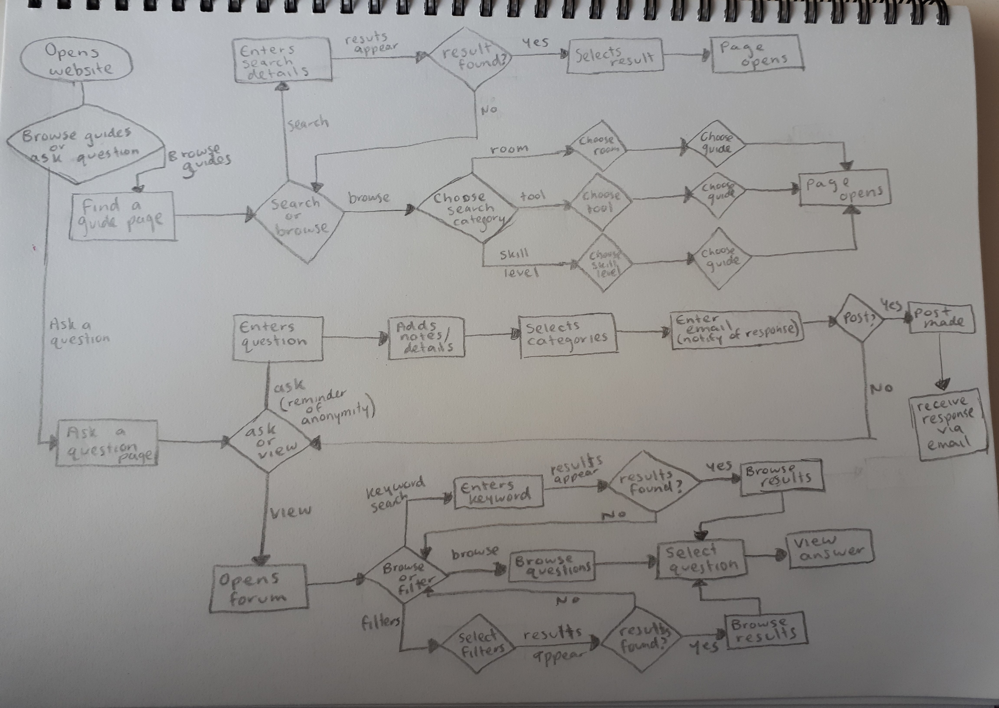
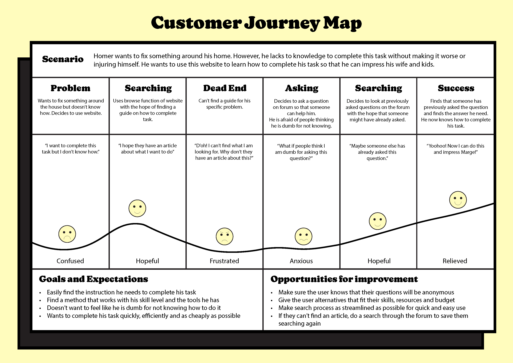
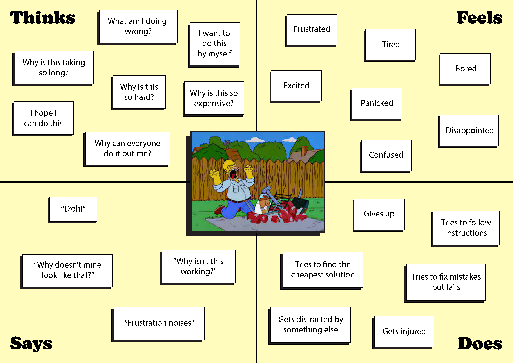
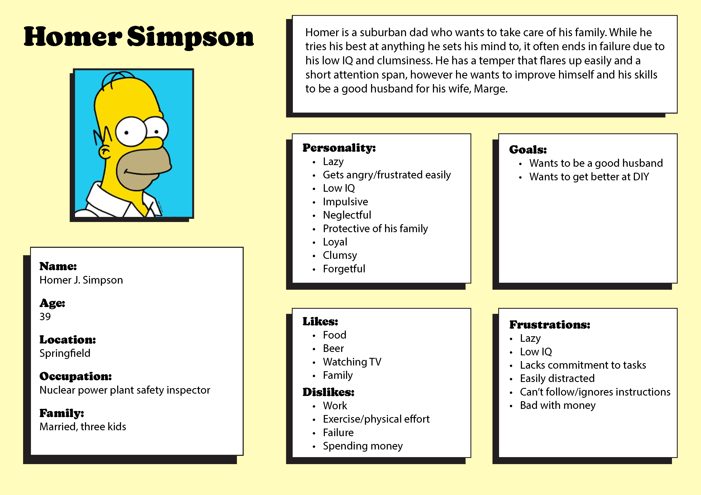
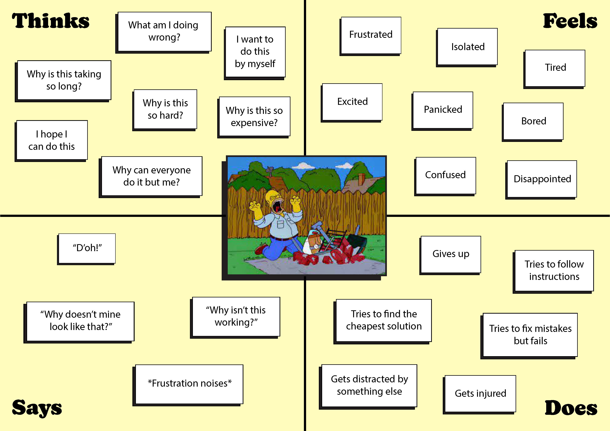
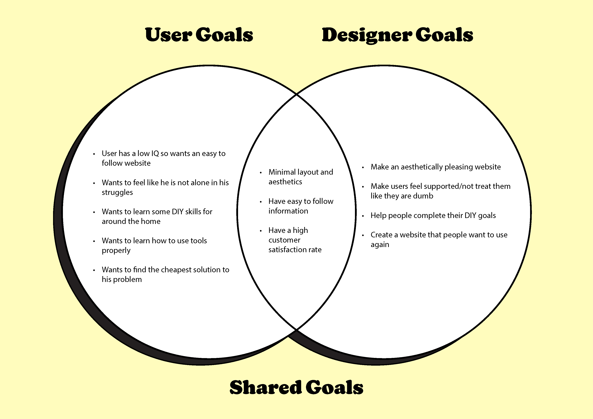
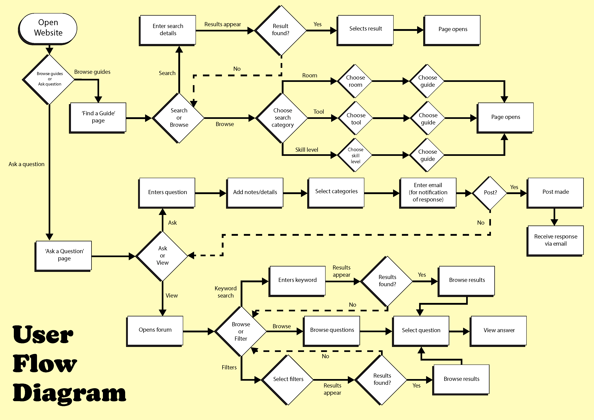
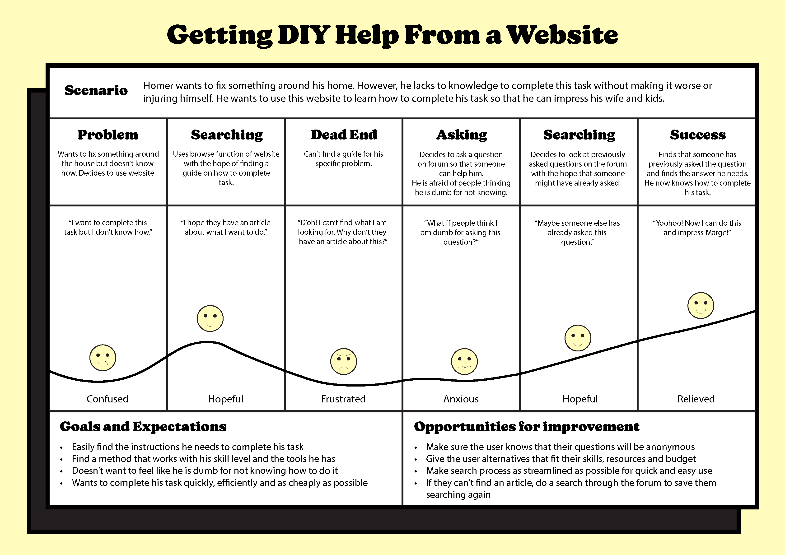

Today in class I continued to work on my assignment. I hadn't done any work on it since last class as I have been busy with other assignments but I am feeling on track with it. I completed my Venn Diagram of goals and started to put my user persona, empathy map and venn diagram onto a doument to lay it out nicely. This is what it looks like so far:

I still need to make it look nicer and lay it out a bit better but I think I am on track to finish it by next Monday. My next steps are to make my user flow diagram and customer journey map, and the do the report write up for each of them.
Today I worked on my assignment and got quite a bit done. I was focusing on my user flow diagram and customer journey map so that I can get some feedback on them before hand in.
I completed my user flow diagram by first sketching it out on paper and then transferring it to Illustrator. I have decided to have two main flows for my page, one where you can search for articles and guides, and forum where you can ask questions. I am quite happy with how this map has turned out and it has given me an idea of how I will structure my website.
I then started on my customer journey map. I have been a bit unsure on what the journey is exactly, whether it should be a possible route through the website or the steps they would take without the site. I have decided to show how the user might use both functions of the website in tandem and have identified some things that I should add to the website to make it fit my end user. I will get some feedback on this to see if I have done it right. I also think I might need to change the text so it sounds a bit more like my character (Homer Simpson).
I also added a nicer layout to my user persona, empathy map and venn diagram. I may still tweak this before the hand in though.
Overall, I am happy with how I have progressed today. My next step is to send this to a tutor for some feedback. I will then touch it up and work on the write up to go with my diagrams.
After receiving feedback on Thursday, I have started and completed the write up for my report. There was nothing for me to really change on my diagrams so I was very happy with this. I have written about each of my diagrams and why they are important, however after receiving some more feedback I will need to add to my description of my goals and talk about how I could apply them to a website.
I also edited my diagrams to fix up a few spelling mistakes.
    Overall, I am happy with how this is progressing. I just have a few things to touch up before hand in on Monday.